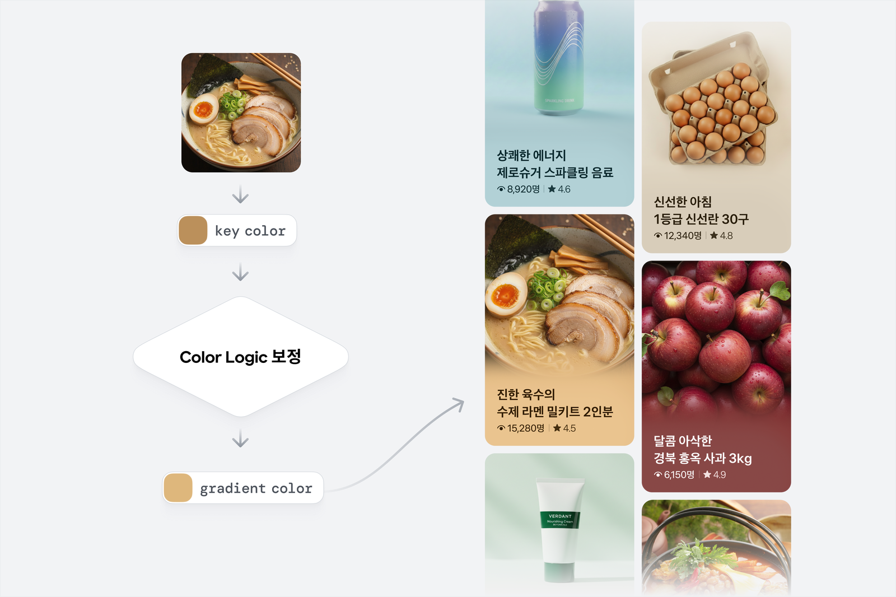
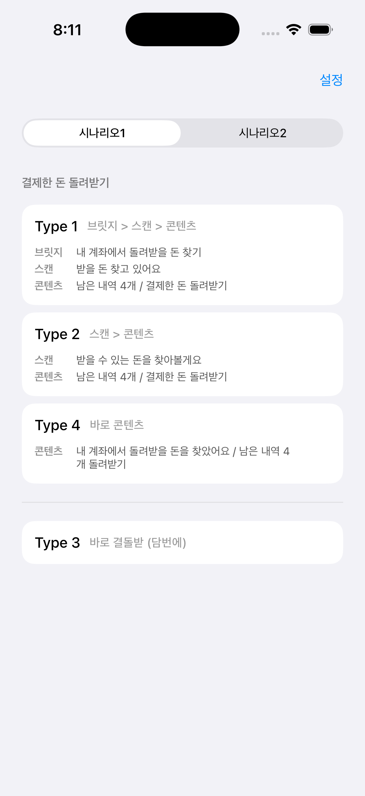
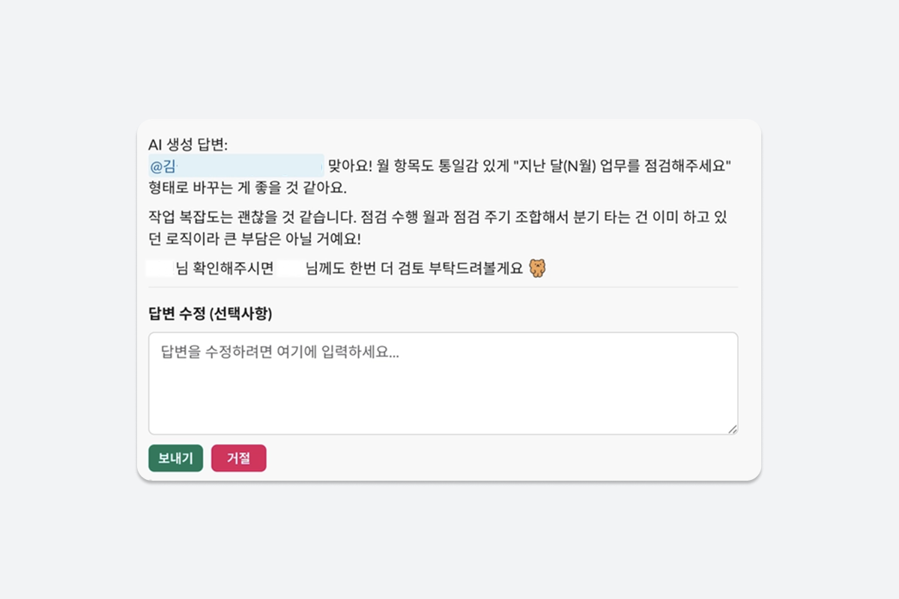
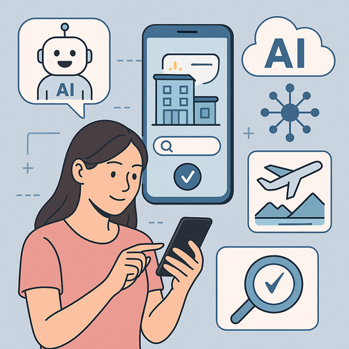
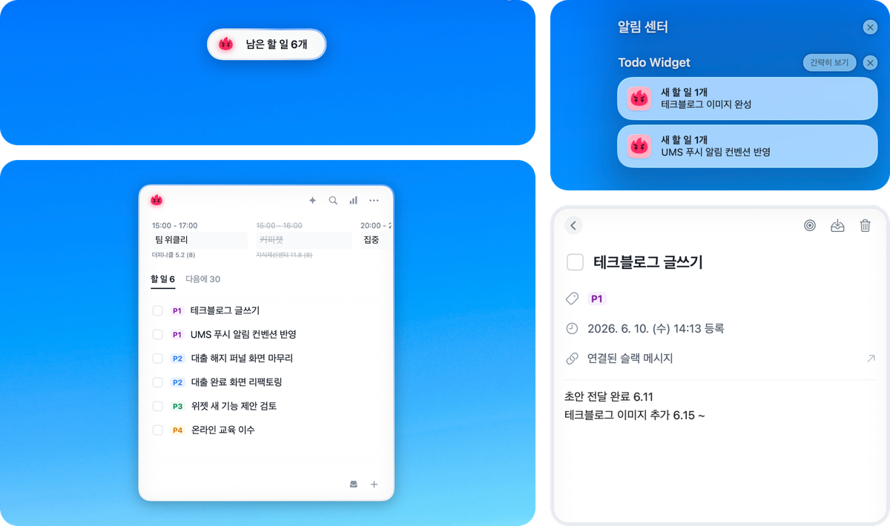
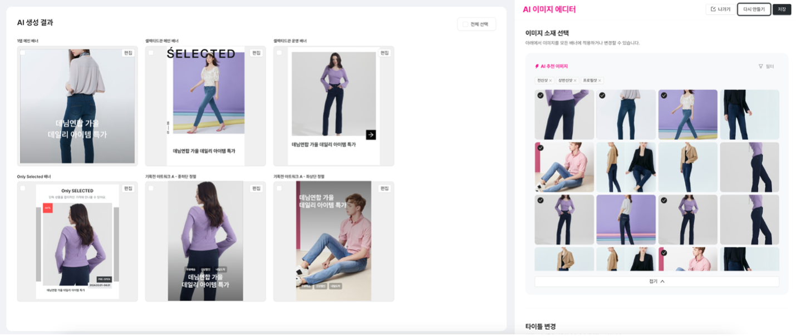
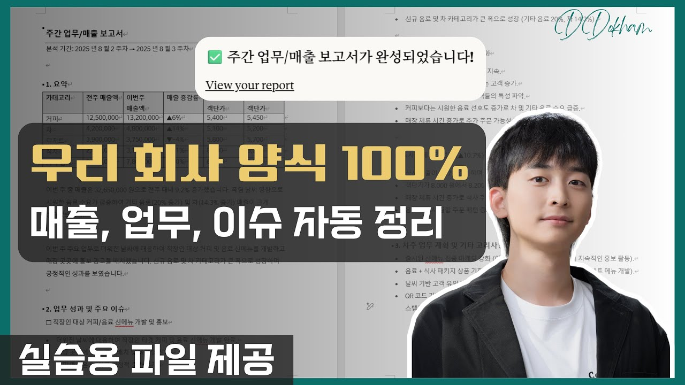
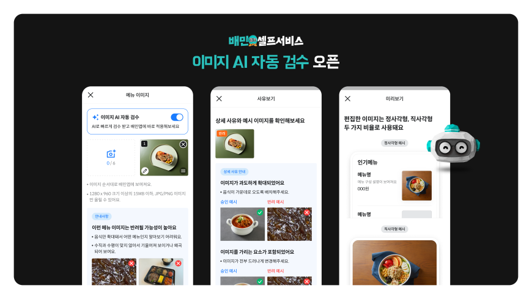
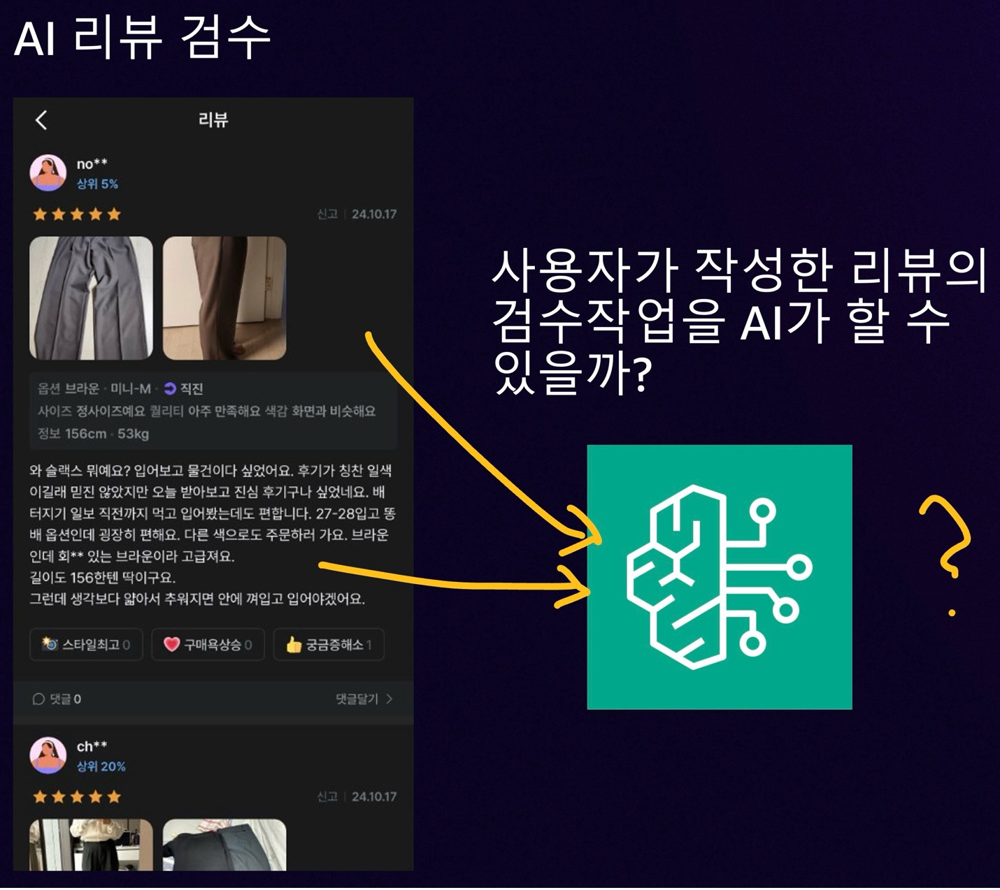
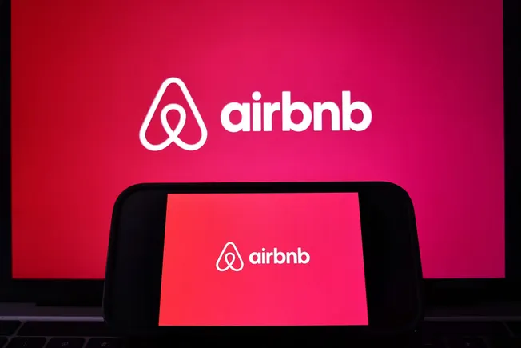

실습반
3주 · 총 6회
4강 도입 · 과제 선정 편
삼삼엠투 AI 교육 · 실습반 4강
AX 우수 사례 & 과제 힌트
오늘은 각자의 과제를 확정하는 날입니다.
그 전에 — 우리 같은 앱 서비스에서 실무자 한 명이 AI로 자기 업무를 바꾼 사례들을 먼저 봅니다. 남의 사례에서 내 과제의 힌트를 찾는 시간.
🌏
업계 방향
모두가 같은 길
→
🎨
디자이너
사례 + 힌트
→
📋
기획자
사례 + 힌트
→
🎧
CS 담당자
사례 + 힌트
→
🎯
내 과제 확정
좋은 과제의 조건 5
진행 박현웅대상 실습반 (디자이너·기획자·CS)준비물 내 반복 업무 목록 (머릿속이면 충분)
● 실습 4강 — 과제 선정
Course Map
3주 · 6회 과정 — 오늘부터 '내 업무'가 교재가 됩니다
🗺️ 실습반 커리큘럼
| 1강 | 작업환경 구축 — Claude Code·OMC·스킬·MCP·Orca |
| 2강 | 커스텀 스킬 도구 생성 — 데이터 수집·분석, 인사이트 추출 |
| 3강 | 하네스 엔지니어링 — 하지 말아야 할 것 |
| 4강 (오늘) | 실습 과제 선정 — 개인/파트 단위 과제 확정 |
| 5강 | 과제 진행사항 + 강사 피드백 |
| 6강 | 과제 진행사항 + 강사 피드백 |
| 합동 | 실습반 합동 공유회 — 최우수 1명 수상 |
🎯 4강 도입부(이 자료)의 역할
- 1강 도구 → 2강 스킬 → 3강 안전 수칙까지 갖췄습니다.
- 남은 질문은 하나 — "그래서 나는 뭘 만들지?"
- 백지에서 고민하지 않도록, 잘 안착한 남의 사례부터 봅니다. 전부 우리 같은 앱 서비스 회사, 대부분 실무자 1명이 시작한 일입니다.
오늘의 성공 = 강의가 끝날 때 각자 과제 1개가 문장으로 확정되어 있는 것
● 실습 4강 — 업계 방향
Big Picture
우리만 하는 게 아닙니다 — 앱 서비스 업계 전체가 같은 방향
숙박·배달·커머스·핀테크 — 고객 접점이 있는 앱 서비스들은 이미 AI를 일상 업무의 기본기로 바꾸는 중입니다.
1/3
Airbnb — CS 문의 AI 해결
2025년 북미 문의의 약 1/3을 사람 개입 없이 해결. 시작점은 화려한 기능이 아니라 CS였습니다.
99.98%
배민 — 이미지 검수 시간 단축
일 1만 건+의 메뉴 이미지 검수를 GPT로 자동화 — 검수 시간 99.98% 단축, 사용률 89%.
80%
야놀자 — 상품 이미지 AI 대체
'놀 스톡 이미지'로 상품 설명 이미지 80%를 생성 AI로, 디자인 작업 시간 26% 단축.
2년
Airbnb — 데이터 정리 먼저
AI CS를 내놓기 전 데이터 웨어하우스 정리에 2년을 먼저 투자. 순서가 성공을 갈랐습니다.
숙박·공간 도메인의 야놀자·여기어때·직방·Airbnb가 전부 이 길 위에 있습니다 — 단기임대 플랫폼인 우리에게 가장 가까운 지도입니다.
출처
● 실습 4강 — 안착의 공식
Success Loop
잘 안착한 회사들의 공통점 — 개인 실험 → 공유 → 확산 루프
전사 플랫폼이 먼저가 아니었습니다. 한 사람의 작은 실험을 정기적으로 공유하는 자리가 먼저였습니다.
🏄
토스 — AI 서프 데이매주 금요일 · 12주 시즌제
개발자뿐 아니라 PO·디자이너·스태프까지 전 직원이 매주 AI 실험 → 팁 공유 → 성공 사례 전파. 자율 클럽 509개, 만족도 4.9.
🥕
당근 — AI Show & Tell매주 화요일
디자이너·운영 매니저·CEO Staff까지 각 팀의 AI 프로젝트와 시행착오를 매주 공유. "문제 정의만 잘하면 비개발자가 가장 강력한 문제 해결자."
🏆
우리 — 합동 공유회과정 마지막 · 최우수 1명
이 커리큘럼의 합동 공유회가 바로 같은 구조입니다. 오늘 정하는 과제가 공유회 무대에 올라갈 작품이 됩니다.
🧪
개인 실험
내 반복 업무 1개
→
📢
정기 공유
5·6강 진행 공유 + 피드백
→
🌱
팀 확산
스킬 배포 → 팀 전체가 사용
출처
● 실습 4강 — 사례 지도
Case Map
오늘 볼 사례 지도 — 3가지 패턴 × 3개 직군
수많은 AX 사례 중, 개인 단위로 재현 가능한 3가지 패턴만 추렸습니다. 각자 자기 직군 줄에서 "내 얘기"를 찾아보세요.
| 패턴 \ 직군 | 🎨 디자이너 | 📋 기획자 | 🎧 CS 담당자 |
|---|---|---|---|
| 📊 리뷰·VOC 분석 쌓여만 가는 텍스트를 인사이트로 | 디자인 관련 VOC 키워드 추출 | 리뷰 → 기획 인사이트 리포트 | 당근 운영 매니저 AI 도구 카카오스타일 리뷰 검수 80%↓ |
| 🎨 콘텐츠 생산 초안은 AI, 판단은 사람 | 토스 컬러 추출 · 동작형 프로토타입 야놀자 놀 스톡 이미지 | 카카오스타일 MD 기획전 몇 주 → 몇 시간 | 답변 초안 생성 + 규정 대조 |
| 🔁 반복 확인·검수 매일 하는 그 일 | 배너·소재 가이드 검수 자동화 | 할 일 수집·정리 자동화 주간보고 · 지원서 등급화 | 배민 메뉴 이미지 검수 야놀자 텔라 Fail-back |
굵게 표시된 칸이 오늘의 메인 사례 — 전부 실무자가 자기 업무에 직접 붙인 것입니다. 지금부터 직군별로 한 장씩.
● 실습 4강 — 직군별 사례 ① 디자이너
🎨 디자이너
디자이너가 만든 도구가 실제 서비스에 올라갔다
토스 — 컬러 추출 자동화디자이너 직접 제작
디자인 챕터 AI Contest 우수작 — 이미지를 넣으면 UI용 색상을 자동 추출·보정. 현재 토스 쇼핑 상품 카드에 실제 적용 중.
디자이너 개인의 실험 → 프로덕션 적용

토스 — 동작형 프로토타입 제작시안 대신 앱
디자이너가 AI 코딩(SwiftUI+셰이더)으로 실제 동작하는 앱을 직접 제작 — 가이드 문서 대신 레포를 전달해 디자인↔개발 번역 과정을 줄임. 특허출원까지.
"어떻게"는 AI가, "뭘 만들까"가 디자인

토스 — 디자이너 슬랙 답변 봇같은 컨테스트 출품작
디자이너의 지식을 학습한 봇이 디자인·요건 질문에 답변 초안을 자동 생성 — "내가 1.5명이 된" 효과.
반복 커뮤니케이션의 자동화

야놀자 — 놀 스톡 이미지숙박 도메인
상품 설명 이미지의 80%를 생성 AI로 대체, 디자인 작업 시간 26% 단축. 숙소 사진 1장으로 시간대·계절별 변형 생성.
이미지 80% 대체 · 작업 시간 26%↓

🏠 삼삼엠투라면 — 과제 힌트
- 브랜드 가이드 검수 스킬색·톤·금지 표현을 스킬로 정의 → 배너·소재 초안을 자동 1차 검수
- 매물·프로모션 비주얼 초안 생성시즌·타깃만 입력하면 우리 톤의 소재 초안 — 최종 판단은 디자이너
- 디자인 요청 티켓 정리 자동화쏟아지는 요청을 유형·긴급도별로 자동 분류해 시트 기록
공통 구조 — 반복 산출물의 초안·검수를 AI에게, 크리에이티브 판단은 나에게.
출처
● 실습 4강 — 직군별 사례 ② 기획자
📋 기획자
기획 판단은 사람이, 준비 작업은 전부 AI가
토스 — 할 일 수집·정리 자동화매일 하던 업무를 디자인하기
슬랙의 요청·논의를 AI가 한 줄 할 일로 요약·등록(출처 링크 포함) — 2년 반 하던 수기 정리가 사라지고 우선순위 판단에만 집중. 세 팀을 동시에 맡으며 만든 도구.
"이걸 꼭 내가, 손으로, 매일 해야 하나?"

카카오스타일 — MD 기획전 자동 생성지그재그
MD가 스토어·콘셉트·소구점만 입력하면 기획전 이미지+문구 자동 생성. 제작 기간 몇 주 → 몇 시간, 기획전 50% 이상 AI 제작 목표.
기획 입력은 사람 · 산출물은 AI

Claude 스킬 — 주간보고 자동화2025 실무자 사례
매출·성과·이슈를 입력하면 회사 서식 100% 동일한 보고서 자동 생성 — 30분 → 3분. 지금 여러분 노트북의 바로 그 스택.
우리가 1·2강에 세팅한 도구 그대로

🏠 삼삼엠투라면 — 과제 힌트
- 주간 지표 리포트 자동화집계 CSV → /data-trace 분석 → 보고 서식 변환까지 한 번에
- 요청·논의 → 할 일 자동 정리채널에 쌓이는 요청을 AI가 한 줄 할 일 + 출처 링크로 정리
- 서류·신청 건 등급화 스킬기준을 스킬로 정의해 입점·제휴·신청 건을 A~D 초벌 분류 — 확정은 사람
공통 구조 — 수집·정리·초안까지 AI, 방향 결정과 최종 문장은 나.
출처
● 실습 4강 — 직군별 사례 ③ CS
🎧 CS 담당자
AI가 초벌, 사람이 확정 — CS 자동화의 안전 공식
배민 — 메뉴 이미지 검수 자동화GPT 기반 업무 자동화
운영자가 직접 하던 일 1만 건+ 메뉴 이미지 검수를 GPT가 정책 기준으로 판정하고 반려 사유까지 안내 — 검수 시간 99.98% 단축, 사용률 89%. GPT가 못 하는 항목만 운영자에게.
검수 시간 99.98%↓ · 반려 사유 자동 안내

카카오스타일 — AI 리뷰 검수Human-in-the-loop
리뷰를 AI가 1차 검수, 사람이 최종 승인 → 검수 리소스 80% 절감, 리드타임 몇 시간 → 몇 분.
3강에서 배운 '검증' 원칙의 실전형

야놀자 텔라 · Airbnb CSFail-back 구조
텔라는 예약 확인 전화를 AI가 처리하고 예외만 사람에게. Airbnb는 문의 1/3→40% AI 해결 — 단, 쉬운 문의부터·데이터 정리부터.
전부 자동이 아니라 "반복분만 AI" 설계

🏠 삼삼엠투라면 — 과제 힌트
- 문의 유형 분석 → FAQ 개선익명화된 문의 로그로 반복 문의 Top N 도출 → 매크로·FAQ 개선안
- 답변 초안 + 규정 대조 체크AI가 답변 초안 → 환불·위약금 원문 규정과 자동 대조 → 사람이 발송
- VOC 주간 리포트 자동 발행리뷰·문의를 유형별 집계해 불만 Top 3를 매주 시트에 기록
3강 복습 — 고객 발송은 반드시 사람 검토 후(에어캐나다 판례) · 문의 로그는 익명화 후 투입(거버넌스 1번).
출처
● 실습 4강 — 나도 할 수 있나
Proof · One Person
"저건 회사니까 가능하지 않나요?" — 아니요, 전부 1명이 시작했습니다
🧑💻
올리브영 경쟁사 모니터링Python + GitHub Actions + 구글 시트
실무자 1명이 경쟁사 129개 제품의 순위·리뷰·프로모션을 매일 자동 추적 — 인프라 비용 0원, 76일 연속 무장애. 2강에서 배운 "스킬+시트" 스택과 같은 구조입니다.
🍔
토스플레이스 메뉴 분류비개발자 팀 · 해커톤 산출물
오픈AI 협업 미니 해커톤에서 비개발자 팀이 수천 건의 가맹점 상품 데이터를 자동 분류하는 도구를 제작해 우수작 선정. 하루짜리 해커톤의 결과물 — 우리에겐 3주가 있습니다.
🐣
토스 할 일 위젯의 확산혼자 쓰려던 도구 → 팀 도구
디자이너 1명이 자기 불편을 해결하려 만든 위젯 — 지금은 개발자들이 먼저 버그를 제보하고 기능을 제안하는 팀 도구가 됐습니다. 확산은 결과이지 목표가 아니었습니다.
공통점 — 거창한 플랫폼이 아니라, 자기 반복 업무 하나에서 시작했다는 것. 여러분의 출발선도 똑같습니다.
출처
● 실습 4강 — 과제 선정 기준
Checklist
사례들이 알려주는 좋은 과제의 조건 5 — 이걸로 채점합니다
✅ 좋은 과제 — 5가지 조건
- 반복적이고 양이 많다리뷰 수천 건, 매주 쓰는 보고서 — 한 번짜리 일은 과제가 아님
- 데이터에 내가 접근할 수 있다Airbnb도 데이터 정리에 2년 — 내 손에 없는 데이터로는 시작 못 함
- 정답을 검증할 수 있다AI 산출물을 원본(규정·시트·실물)과 대조 가능해야 — 3강 원칙
- 틀려도 복구 가능한 곳부터고객 발송이 아니라 내부 리포트·초안부터 — 초안 AI·승인 사람
- 내 업무여야 한다"문제 정의만 잘하면 비개발자가 가장 강력한 문제 해결자" — 당근
🚫 이런 과제는 다시 고릅니다
- "AI 챗봇을 만들어서 고객에게 바로" — 검증 없는 고객 접점은 3강의 에어캐나다 코스
- "회사 전체 데이터를 다 모아서" — 접근 권한도, 3주 안에 끝날 크기도 아님
- "1년에 한 번 하는 그 일" — 자동화 이득이 없음
- "옆 팀 업무가 더 재밌어 보여서" — 데이터도 검증 기준도 내게 없음
채점법 — 후보 과제에 조건 5개로 O/X. 4개 이상이면 합격, 3개 이하면 범위를 줄이거나 다른 후보로.
● 실습 4강 — 과제 후보 보드
Idea Board
삼삼엠투 과제 후보 보드 — 여기서 골라도, 변형해도 좋습니다
전부 1·2강 스택(스킬+시트)으로 구현 가능하고, 3강 거버넌스를 통과하도록 설계된 후보들입니다.
| 직군 | 과제 후보 | 패턴 | 거버넌스 체크 |
|---|---|---|---|
| 🎨 디자이너 | 브랜드 가이드(색·톤·금지 표현) 검수 스킬 — 소재 초안 자동 1차 검수 | 반복 검수 | 내부 자료만 · 최종 판단 사람 |
| 🎨 디자이너 | 시즌 프로모션 비주얼·문구 초안 생성기 | 콘텐츠 생산 | 게시 전 반드시 검토 |
| 📋 기획자 | 주간 지표 리포트 자동화 — 집계 CSV → 분석 → 보고 서식 | 반복 리포트 | 개인 식별자 없는 집계치만 |
| 📋 기획자 | 경쟁 서비스 모니터링 — 공개 가격·프로모션 주기 수집·요약 | 리뷰·VOC 분석 | 공개 정보만 사용 (3강 Q1 유형) |
| 📋 기획자 | 요청·논의 → 할 일 자동 정리 / 입점·제휴 신청 건 A~D 초벌 등급화 | 반복 확인·검수 | 내부 자료만 · 확정은 사람 |
| 🎧 CS | 문의 유형 분석 → 반복 문의 Top N → FAQ·매크로 개선안 | 리뷰·VOC 분석 | 익명화 후 투입 (3강 Q2) |
| 🎧 CS | 답변 초안 + 환불·위약금 규정 원문 대조 체크 스킬 | 콘텐츠+검증 | 발송은 반드시 사람 (에어캐나다) |
| 공통 | 앱 리뷰 주간 인사이트 리포트 — 수집→분류→Top 3→시트 기록 | 리뷰·VOC 분석 | 공개 리뷰라 안전 |
이 표는 출발점입니다 — 여러분이 매일 하는 일 중에 더 좋은 후보가 있다면 그쪽이 정답입니다.
● 실습 4강 — 오늘의 미션
Mission
지금부터 브레인스토밍 — 끝나면 과제 1개가 문장이 됩니다
🎯 과제 확정 3단계
1
내 반복 업무 3개 적기 (10분)
매일·매주 반복하고, 하기 싫고, 시간 잡아먹는 일 — 사례에서 본 패턴에 억지로 맞추지 말고 솔직하게.
2
조건 5로 채점 (10분)
반복성 · 데이터 접근 · 검증 가능 · 복구 가능 · 내 업무 — O/X로 채점해 4개 이상 남기기.
3
한 문장으로 확정 + 강사 확인
"나는 [데이터]로 [반복 업무]를 [산출물]로 자동화한다" 형식으로 선언 — 강사와 범위 조정 후 확정.
✍️ 확정 문장 예시
- "나는 앱 스토어 리뷰로 수동 리뷰 취합을 주간 인사이트 시트로 자동화한다"
- "나는 익명화된 문의 로그로 반복 문의 파악을 FAQ 개선 리포트로 자동화한다"
- "나는 브랜드 가이드 문서로 소재 검수를 체크리스트 자동 판정으로 자동화한다"
이 문장이 5·6강 진행 공유의 제목이 되고, 합동 공유회 발표의 첫 슬라이드가 됩니다.
삼삼엠투 AI 교육 · 실습반 4강
사례는 끝 — 이제 여러분 차례입니다
토스의 디자이너도, 당근의 운영 매니저도, 배민의 PM도 — 자기 반복 업무 하나에서 시작했습니다.
지금부터 브레인스토밍으로 넘어갑니다.
📝
브레인스토밍
반복 업무 3개 → 채점 → 확정
·
💬
1:1 범위 조정
강사와 과제 크기 맞추기
실습반NEXT 5강 — 과제 진행사항 + 강사 피드백